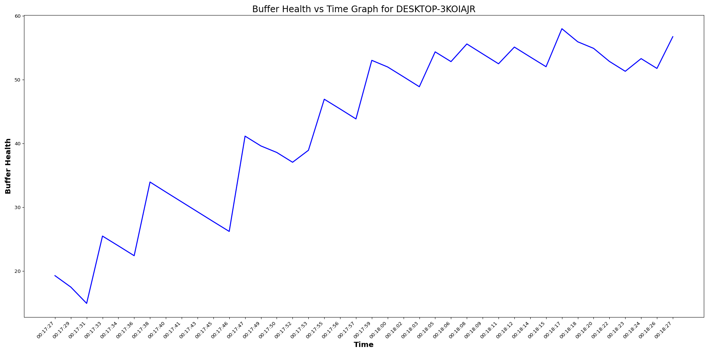

The Objective is to conduct automated Youtube Video Streaming test across multiple laptops to gather statistics. The test will collect these statistics. Additionally,automated graphs will be generated using the collected data.
| Test Parameters |
|
||||||||||||||||||||||||

| Hostname | OS Type | MAC | RSSI | Link Rate | ViewPort | SSID | Video Resoultion | Max Buffer Health (Seconds) | Min Buffer health (Seconds) | Total Frames | Dropped Frames |
|---|---|---|---|---|---|---|---|---|---|---|---|
| DESKTOP-3KOIAJR | windows | f4:8c:50:e2:01:67 | -37 dBm | 702 Mbps | 1273x716 | OpenWifi_psk2 | 1920x1080@30 | 58.01 | 14.92 | 1846 | 14 |
